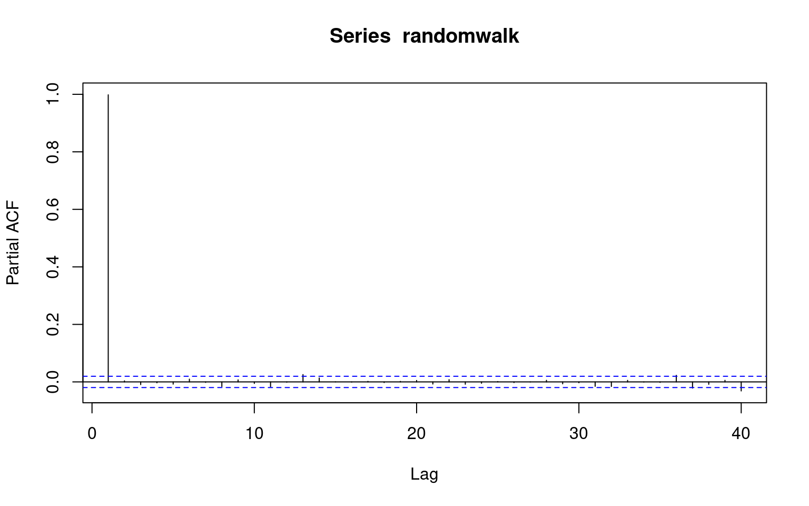

Lab Review 3
Hoang Nguyen
Feb 17, 2017
New words
Deterministic process vs stochastic process
\[Y_t = \{y_1, \ldots, y_T \}\]
See an example that Daniel McLaury gives
- A deterministic process is one where the present state completely determines the future state. If I make a (riskless) investment of $1,000 at 5% interest, compounded annually, then in one year’s time I will have $1,050, in two years’ time I will have $1,102.50, and so forth.
- A stochastic process, on the other hand, is one where there’s some randomness or uncertainty involved. If I buy $1,000 worth of IBM stock today, how much money will it be worth in one year’s time? In two years’ time? Who knows? This is a stochastic process.
Another example of the Monthly U.S. airline passenger-miles: 01/1996 - 05/2005.

Means, Variances, and Covariances
mean function
\[ \mu_t = E(Y_t) = \sum_{i = 1}^T y_i /T\]
autocovariance function
\[ \begin{split} \gamma_{t,s} & = Cov(Y_t, Y_s) \\ & = E((Y_t - \mu_t)(Y_s - \mu_s)) \\ & = E(Y_t Y_s) - \mu_t \mu_s \end{split} \]
autocorrelation function
\[ \begin{split} \rho_{t,s} & = \frac{ Cov(Y_t, Y_s)}{\sqrt{ Var(Y_t) Var(Y_s)}} \\ & = \frac{\gamma_{t,s}}{\sqrt{\gamma_{t,t} \gamma_{s,s}}} \end{split} \]
The properties of \(\rho_{t,s}\)? range?
Random Walk

Let \(e_1 , e_2 ,...\) be a sequence of independent, identically distributed random variables each with zero mean and variance \(\sigma_{e}^2\).
\[ \begin{aligned} Y_1 &= e_1 \\ Y_2 &= Y_1 + e_2 \\ ...& \\ Y_t &= Y_{t-1} + e_t \\ \end{aligned} \]
Properties of random walk? Mean and Variance
Stationarity
A random process \({X(t),t \in T}\) is stationary if its statistical properties do not change by time.
- Strict-sense stationary means joint CDF of \(X(t_1), X(t_2) , ... , X(t_r)\) is equal to \(X(t_1 + \Delta), X(t_2 + \Delta) , ... , X(t_r + \Delta)\)
- Weak-sense stationary means \[ \begin{aligned} E[X(t_1)] &= E[X(t_2)] \\ E[X(t_1)X(t_2)] &= E[X(t_1+\Delta)X(t_2+\Delta)] \end{aligned} \]
Random walk is stationary?

White Noise
Trend Stationary vs Difference Stationary
You can write a trend-stationary process, \(y_t\), as
\[y_t= \mu_t+\epsilon_t\]
where:
\(\mu_t\) is a deterministic mean trend.
\(\epsilon_t\) is a stationary stochastic process with mean zero.
You can write a difference stationary process, \(y_t\), as
\[ \Delta^D y_t= \mu + \epsilon_t\]
where:
D is D th-degree differencing operator.
\(\mu\) is a constant.
\(\epsilon_t\) is a stationary stochastic process with mean zero.
Make your guess?
Trend Stationary or Difference Stationary